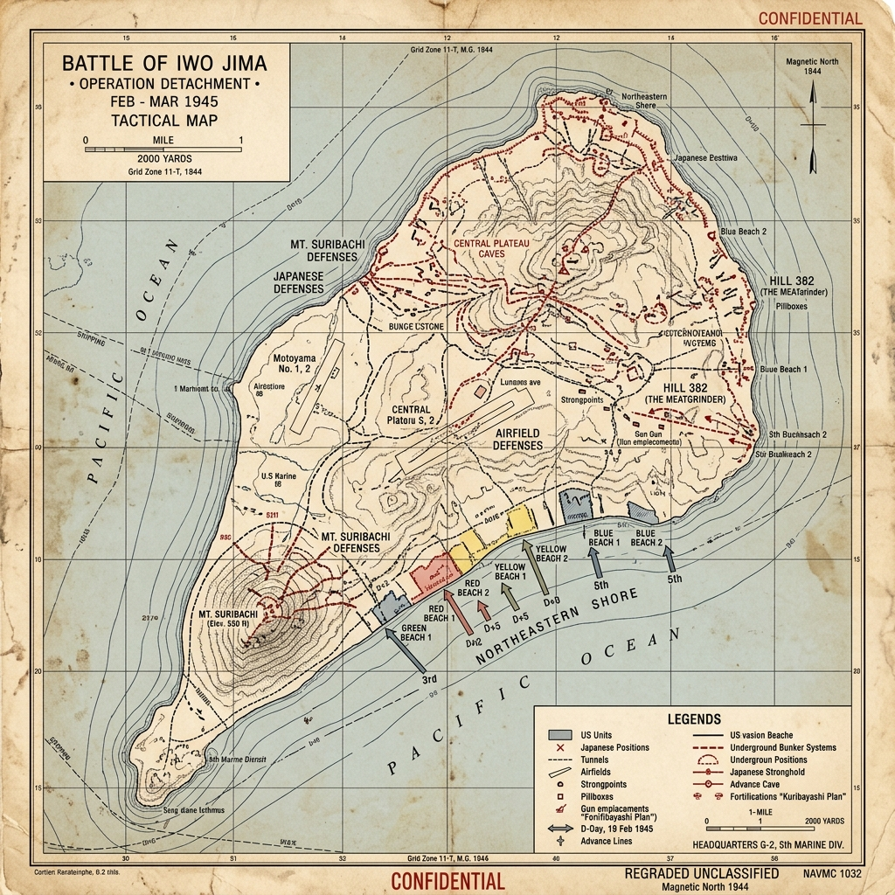

Strategic Context & The Island Hopping Campaign
By early 1945, the Allied 'island-hopping' campaign had brought US forces to the inner defense ring of the Japanese Empire. The volcanic island of Iwo Jima, a tiny speck of black sand and sulfur located midway between the Mariana Islands and Tokyo, became a critical strategic objective. The US Army Air Forces were conducting a strategic bombing campaign against Japanese cities using B-29 Superfortresses, launched from Saipan and Tinian.
However, these bombers faced challenges: they had no fighter escorts to protect them over Tokyo, and the Japanese radar station on Iwo Jima provided early warning to the home islands, allowing fighters to intercept the B-29s. Capturing Iwo Jima would eliminate the radar station, provide an emergency landing strip for damaged B-29s, and serve as a base for P-51 Mustang fighter escorts, significantly reducing bomber casualties.
Military Doctrines: The Subterranean Fortress
The Japanese commander on Iwo Jima, General Tadamichi Kuribayashi, recognized that he could not win the battle. The US possessed absolute air and naval superiority, and Japan could not reinforce the island. Kuribayashi's goal was not to win, but to inflict such high casualties on the Americans that it would break their political resolve to launch an invasion of the Japanese home islands.
Kuribayashi ordered a radical shift in Japanese defensive doctrine. He forbade the traditional, suicidal banzai charges, which had decimated Japanese garrisons earlier in the war. Instead, he transformed the island into a subterranean fortress. The Japanese constructed over 11 miles of tunnels connecting 1,500 concrete bunkers, pillboxes, and artillery positions, dug deep into the volcanic rock and Mount Suribachi, leaving the surface looking deserted.
Weapons, Technology, and Logistics
The battle was characterized by close-quarters combat against fortified positions. The US Marines relied on flamethrower tanks (Sherman 'Ronson' or 'Zippo') and portable M2 flamethrowers to clear bunkers. Satchel charges containing C-4 explosive and hand grenades were used to seal tunnel entrances.
The Japanese defenders utilized mortars, heavy artillery, and rocket launchers, including the 320mm spigot mortar, which fired a massive 650-pound shell that caused heavy psychological impact. They also deployed hidden anti-tank guns to target American armor on the beaches.
Opening Moves & The Landing
The landing on February 19, 1945, was preceded by a three-day naval bombardment. At 9:00 AM, the first wave of Marines from the 4th and 5th Marine Divisions landed on the southern beaches of Iwo Jima. They struggled to move in the deep, loose volcanic ash, which clogged their boots and made vehicle movement impossible.
Initially, the Marines faced silence. Kuribayashi had ordered his men to hold their fire until the beaches were crowded with troops and equipment. At 10:00 AM, the Japanese opened fire from hidden positions on Mount Suribachi and the northern plateau, unleashing a crossfire of artillery, mortars, and machine guns that turned the beaches into a slaughterhouse.
Mount Suribachi & The Flag Raising
The primary American objective in the south was Mount Suribachi, a dormant volcano that dominated the landing beaches. The Marines fought their way up the slopes, clearing bunkers room by room. On February 23, 1945, a patrol from the 28th Marine Regiment reached the summit and raised a small American flag.
Later that day, a larger flag was raised to make it visible across the island. Associated Press photographer Joe Rosenthal captured the event. The photograph, 'Raising the Flag on Iwo Jima', became the defining image of the Pacific War, winning the Pulitzer Prize and serving as a powerful symbol of military sacrifice.
The Meatgrinder: The Northern Plateau
With Suribachi secured, the Marines turned north to capture the airfields and the rest of the island. This phase, known as the 'meatgrinder', was the bloodiest part of the battle. The terrain was a maze of rocky ridges, sulfur ravines, and hidden cave networks. The Marines advanced only yards a day, facing constant sniper fire and counterattacks at night.
The Japanese defenders fought with discipline. Cut off from food and water in their underground tunnels, they refused to surrender, forcing the Marines to systematically seal the caves. The battle continued for five weeks, culminating in a final night raid by Japanese survivors on March 26, which targeted an American airfield before being wiped out.
Pivot Points & Command Decisions
The most critical decision was Kuribayashi's defensive strategy. By forbidding banzai charges and forcing the Americans to fight for every cave, he succeeded in dragging out the battle for 36 days and inflicting heavy casualties. This was the only battle in the Pacific War where total US casualties exceeded those of the Japanese.
Another factor was the US refusal to use chemical weapons. Although some commanders recommended using poison gas to clear the cave networks quickly, President Franklin D. Roosevelt maintained a strict policy against the first use of chemical weapons, preferring to accept the high Marine casualty rates instead.
The Soldier's Ordeal & Civilian Impact
For the Marines, Iwo Jima was an ordeal of close-quarters combat against an invisible enemy. The sulfur fumes, constant noise, and sight of mangled bodies caused high rates of combat fatigue. Fleet Admiral Chester Nimitz remarked: 'Among the Americans who served on Iwo Island, uncommon valor was a common virtue.'
Iwo Jima had no civilian population during the battle; the Japanese military had evacuated the 1,000 civilian residents in 1944. The island was transformed into a military zone, and the environment was destroyed by the bombardment, leaving a landscape of craters and volcanic ash.
The Aftermath & Strategic Consequences
The capture of Iwo Jima cost the United States over 6,800 dead, while nearly the entire Japanese garrison of about 21,000 was killed. The airfields were repaired for use as emergency landing strips and later for fighter escorts. By war's end, more than 2,200 B-29s had made emergency landings on the island—a figure often cited as saving thousands of aircrew—though historians continue to debate the overall cost-benefit of the operation relative to alternative uses of those Marine divisions.
The high human cost of taking a small volcanic island shocked the American public and military planners. Together with the later bloodbath on Okinawa, Iwo Jima strengthened estimates of how costly an invasion of Japan's home islands (Operations Olympic and Coronet) might be. Those casualty expectations were one factor in end-of-war decision-making—but the atomic bombings also reflected the readiness of the Manhattan Project, the Interim Committee's recommendations, the Soviet entry into the war against Japan, blockade and firebombing strategy, and Japanese political deadlock. It is more accurate to say Iwo Jima contributed to invasion-cost calculations than to claim it alone 'caused' the use of nuclear weapons.
Historical Legacy & Long-term Impact
Iwo Jima is central to the history and identity of the United States Marine Corps. The Marine Corps War Memorial in Arlington, Virginia, is based on Rosenthal's flag-raising photograph. The battle is remembered as a symbol of military courage, sacrifice, and the high cost of victory in the Pacific.
For Japan, the battle is remembered as a heroic but tragic defense. In 1994, Emperor Akihito visited the island, expressing condolences to the dead of both nations, and the island remains a joint memorial site where veterans gather to commemorate the reconciliation between the two former enemies.
The Axis Perspective
The defense of Iwo Jima was a masterful, if doomed, execution of a strategy of attrition. General Kuribayashi recognized that defeating the overwhelming American amphibious and naval firepower was impossible. His sole objective was to inflict such horrific, unacceptable casualties on the US Marines that it would break the political will of the American public to launch a mainland invasion of Japan. He explicitly forbade suicidal banzai charges, ordering his men to remain in their fortified positions and kill at least ten Americans before dying themselves. The Japanese soldiers, enduring unimaginable conditions underground with no hope of reinforcement or survival, fought with a terrifying discipline. In his final, poignant dispatch to Tokyo before his presumed death in the final days of the battle, Kuribayashi maintained his martial dignity while acknowledging the end: "The situation is becoming very grave... We are sorry we have not been able to defend the island successfully. Now I, Kuribayashi, will lead a final charge." His strategy succeeded in inflicting massive casualties, but failed to break the American resolve, while US leaders drew grim lessons about the cost of invading fortified Japanese territory.
Tactical Map & Theater of Operations
A reconstruction of the island defenses and Marine assault sectors on Iwo Jima:

Figure: Battle of Iwo Jima, February–March 1945: Mapping the designated US Marine landing beaches, Mount Suribachi, and General Kuribayashi's fortified cave systems.
Unusual and Little-Known Facts
Iwo Jima's flag raising is one of the most reproduced images on earth. The island's stranger truths are about sulfur, tunnels, and a battle that was only beginning when the cameras clicked.
The island is a volcanic sulfur heap with almost no natural fresh water. Marines fought in black ash that swallowed boots and vehicles, amid a rotten-egg stench of sulfur vents. Water, ammunition, and even earth-moving equipment had to be projected across the Pacific to keep the assault alive.
General Tadamichi Kuribayashi forbade the classic massed banzai charge for as long as discipline held. Instead he built roughly eleven miles of tunnels and bunkers, aiming to bleed the landing force from invisible positions. The result was a battle with almost no secure 'rear' for the attackers.
Joe Rosenthal's famous flag-raising photograph records the second flag on Mount Suribachi, on 23 February 1945—only the fifth day of a thirty-six-day battle. The icon of victory was made while most of the dying on the northern plateau still lay ahead.
Iwo Jima was among the rare Pacific battles in which total American casualties exceeded Japanese combat deaths. That grim ratio, more than any single statistic, shaped how US leaders imagined the cost of invading Japan's home islands.
Navajo Code Talkers served with Marine units on the island, transmitting tactical messages in a code based on the Navajo language that Japanese intelligence never broke. Their work was a quiet force multiplier inside one of the loudest battles of the war.
These details do not replace the main operational story—but they are often the ones that stick, because they reveal contingency, myth-making, and human texture beneath the familiar headlines.
Archives, Primary Sources & Further Reading
For research resources, maps, and original diaries from Iwo Jima:
- The National WWII Museum - Sacrifice and Sanctuary An analysis of the battle's strategic value and the emergency landing fields on the island.
- USMC History Division - Iwo Jima Monographs Official Marine Corps historical summaries, unit reports, and medal of honor citations.
- The Tadamichi Kuribayashi Letters Letters and drawings sent by General Kuribayashi to his family in Tokyo, detailing his life and thoughts on the island.